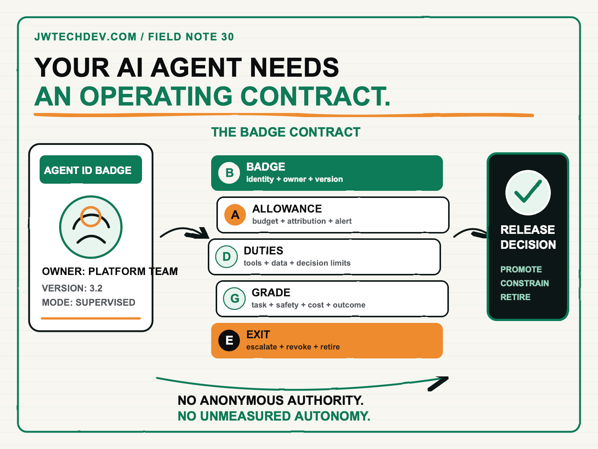

Your AI agent needs an employee badge, a budget, and a performance review.
An agent that can read data, call tools, spend money, and change a business record is no longer just a chat interface. It is a workload with identity, authority, cost, performance expectations, and a retirement path.

Quick answer
Before an AI agent enters production, require five things: a unique workload identity, an attributable spending allowance, explicit duties and prohibited actions, a recurring evaluation scorecard, and a tested exit path. I call this the BADGE operating contract.
The point is not to pretend software is an employee. The point is to apply the operational discipline organizations already understand. We would not give a new hire anonymous access, unlimited purchasing power, undefined responsibilities, no review cycle, and no offboarding process. An agent that can act across enterprise systems should not receive those conditions either.
Why the workforce metaphor works
Most early AI governance focused on model selection, data policy, and acceptable use. Those controls still matter. Agents add another layer because they can combine reasoning with action. A single workflow may retrieve a customer record, call an external service, draft a decision, update a system, and ask another agent to continue the task.
That makes identity the first architectural question. Amazon Bedrock AgentCore Identity describes agent identities as workload identities and provides authentication, authorization, credential management, and audit support for agents accessing AWS and third-party services. AWS also documents tokens that can bind both the end user and the agent identity, which is materially better than one shared service credential representing every action.
Governance cannot stop at access. NIST's AI Risk Management Framework calls for clear accountability, an inventory of AI systems, ongoing measurement, post-deployment monitoring, incident response, override, and safe decommissioning. In practical terms, every production agent needs an owner and an operating record, not just a repository and a prompt.
The BADGE operating contract
Badge: Who is acting? Give the agent a stable workload identity, named owner, environment, version, and credential path. Record whether it acts as itself, on behalf of a verified user, or through a service role. Avoid shared credentials that erase attribution. The badge should make every tool call answerable: which agent version acted, for which user, under which policy?
Allowance: What may it spend? Assign the agent to a product, team, or cost center. Track model, tool, storage, network, and downstream vendor costs. Use cost-allocation metadata, budgets, forecast alerts, and anomaly detection where the platform supports them. An AWS Budget is not automatically a perfect hard stop, so define the operational response too: alert, reduce capability, route to a cheaper model, require approval, or pause nonessential work.
Duties: What work may it perform? Write a narrow job description with approved data classes, tools, actions, and decision limits. Separate read, draft, recommend, update, publish, transact, and delete permissions. Specify which steps require human approval. A guardrail that filters unsafe language is not the same as authorization to issue a refund or change a customer record.
Grade: How will performance be measured? Evaluate the complete task, not only the final sentence. Current AgentCore Evaluations guidance includes response quality, safety, task completion, tool use, ground truth, and custom evaluation paths. Add business measures such as successful resolution, human override, rework, latency, cost per completed task, and customer impact.
Exit: When must it stop? Define escalation, rollback, incident response, credential revocation, version retirement, and decommissioning before launch. The agent should know when to ask for help. The platform team should know how to disable it without discovering dependencies during an incident.
A performance review for software that acts
A useful agent review has three layers. The first is technical: availability, latency, token use, tool errors, and policy blocks. The second is behavioral: task completion, groundedness, correct tool selection, argument quality, and adherence to approval gates. The third is business performance: time saved, revenue protected, risk reduced, adoption, customer outcome, and cost per successful result.
Review those layers together. A fast, inexpensive agent that creates rework is not efficient. A highly accurate agent that nobody trusts is not adopted. A popular agent with unbounded tool access is not production-ready.
The review should produce a decision: promote the version, constrain it, retrain the workflow, change the model or tools, return it to supervised mode, or retire it. Evaluation is valuable when it changes release authority. Otherwise it becomes dashboard theater.
What leaders can do next Monday
- Inventory every agent that can act. Include owner, version, environment, users, data, tools, credentials, and current deployment status.
- Write a BADGE card for one production candidate. Keep each section short enough that an executive, security reviewer, and operator can challenge it in one meeting.
- Remove anonymous authority. Replace shared credentials with attributable workload and user-agent identity patterns where possible.
- Attach cost to an owner and outcome. Create allocation tags or categories, a budget, thresholds, and an explicit response when spend changes unexpectedly.
- Turn evaluation into a release gate. Choose task, tool, safety, cost, and business thresholds that a new version must pass.
- Run the exit drill. Revoke access, pause the agent, route the task to a human, and confirm that evidence survives the handoff.
The organizations that scale agents will not be the ones with the most demos. They will be the ones that can answer who acted, what authority was used, what the action cost, whether it worked, and how to stop it safely.
I will be at AFROTECH in Houston November 2-6. If you are building an enterprise AI platform, global delivery organization, or technical go-to-market motion, I would be glad to compare notes.
Sources checked
Give every agent an operating contract
Explore more practical frameworks for identity, permissions, evaluations, cost, and production AI infrastructure.
Get the free starter kit